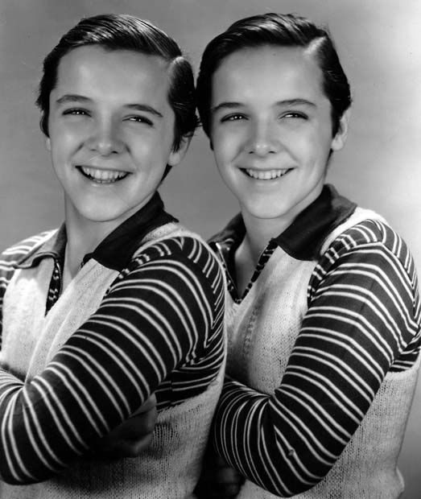

DNA, clearly explained.
Genetic conditions, tests and treatments, clearly explained. What genes are, how they are inherited and where DNA medicine is heading, with sources on every page.
Try:
1953: Watson and Crick proposed the double-helix model, relying on data from Franklin, Gosling, Wilkins and Chargaff. DNA had been known since 1869, and since 1944 it was known to be the hereditary material.
 1953McCarty, Watson and Crick
1953McCarty, Watson and Crick BasicsWhat is DNA?Image: Zephyris · CC BY-SA 3.0 · Wikimedia Commons
BasicsWhat is DNA?Image: Zephyris · CC BY-SA 3.0 · Wikimedia Commons
FAQDo twins have the same DNA?Image: William A. Macis · Public domain · Wikimedia CommonsLeft to right: Maclyn McCarty, James Watson and Francis Crick. Photo: Marjorie McCarty, PLOS Biology (2005), CC BY 2.5. The story behind the photo
What do you need today?
Start with the basics
Six ways into genetics
 Conditions
ConditionsGenetic conditions and syndromes
Clear fact sheets on genetic conditions and syndromes, inherited or not: cause, symptoms, inheritance, diagnosis, treatment and where to learn more.
28 articles → Diagnosis
DiagnosisFrom symptoms to results
Chromosome and molecular tests, newborn and prenatal screening, carrier testing, reading a result and genetic counselling.
7 articles → Treatments
TreatmentsFrom evidence to care
Targeted and supportive treatments, gene therapy, CRISPR and pharmacogenetics: what works, what is being studied and the ethical questions.
5 articles → Heredity
HeredityHow traits are inherited
From Mendel to epigenetics: inheritance patterns, penetrance and why risk is not destiny.
4 articles →HistoryFrom Mendel to the genome
A timeline of genetics, from Mendel's peas to CRISPR and the pangenome.
See the timeline → People
PeopleThe people behind genetics
Physicians, geneticists, biochemists and biologists who moved genetics forward, from Mendel to CRISPR.
38 articles →From Mendel's peas to the complete genome
Mendel and the peas
Gregor Mendel describes the rules of heredity. His work goes almost unnoticed for 34…
DNA is the genetic material
Avery, MacLeod and McCarty show that the transforming principle is…
The double helix
James Watson and Francis Crick propose the double-helix structure of…
The human genome
The first drafts are published (2001) and the Human Genome Project is completed…
CRISPR-Cas9 as a tool
Charpentier and Doudna show that CRISPR-Cas9 can be programmed to cut DNA wherever…
Made-to-measure gene editing
A baby with a rare metabolic disease receives the first base editor designed just for…
Latest articles
In brief: a map of how genes raise the risk of heart attack
A study published in Nature places much of the inherited risk of coronary artery disease in the cells of the artery wall.
Read →In brief: a gene-silencing drug approved for myasthenia gravis
In November the US approved Livsayis (cemdisiran), from Regeneron, the first RNA interference drug for this autoimmune disease.
Read →
KJ, the first baby treated with bespoke gene editing
In 2025 a Philadelphia team designed, in six months, a gene edit for a single baby with a deadly metabolic disease. A milestone that could change how rare diseases are treated.
Read →To review, play and teach
Glossary
The words in a genetic report, explained in a sentence or two.
Open →ResourceQuiz
Ten questions a day, by topic or level, with an explanation for every answer.
Open →ResourceResources for teachers
Reading routes by level, hands-on classroom activities and debate topics linked to Geneticapedia articles.
Open →Where to look up research
Official databases and registries where research is published, with what to look for in each. A study existing does not mean a treatment is available.
Recent publications
Tell apart laboratory studies, trials, reviews and preliminary results.
PubMed ↗Look up · ClinicalTrials.govClinical trials
Check who is included, which phase it is in, what it is compared with and what results it has.
ClinicalTrials.gov ↗Look up · EMAAuthorised medicines
Check the indication, who can receive it and whether it is authorised where you live.
EMA ↗Created by a family doctor
Alejandro Rosàs, a family physician with over 38 years in primary care and a specialist in Preventive Medicine and Public Health. Licensed in Barcelona, no. 28574.
No determinism, no alarmism
Genes matter, but they rarely decide everything. We explain the evidence, its limits and the ethical questions.